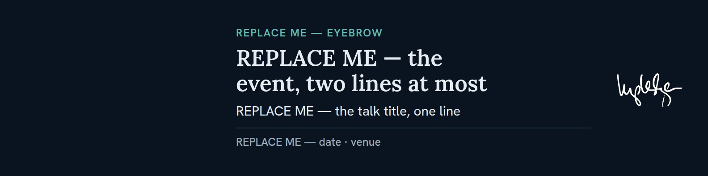
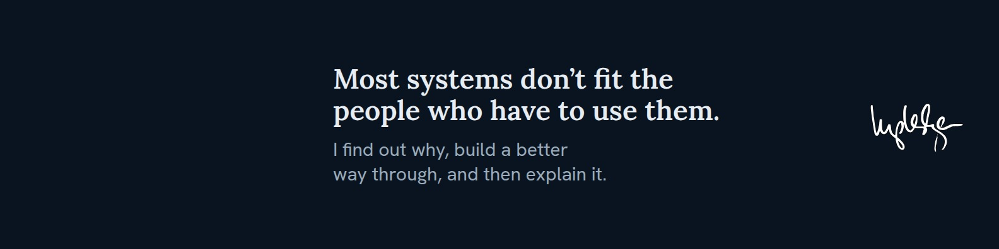

A layer-3 consumer format at 4:1. LinkedIn's native profile-header size, so it uploads with no resampling at all — unlike the quote card's 7:5, which is native nowhere.
The empty third is not wasted space — the avatar is the left-third composition. Judge the banner with a photo overlaid, never on its own.


| Canvas | 1584×396 (4:1). Exports JPG q92. |
| Register | Dark (§3), pinned. Chosen, not inherited — a light-bordered profile photo separates from a dark header without a stroke. |
| Budget | 300px of content height. Mode A measures 273, Mode B 196. |
| Accent | The eyebrow, once. The meta rule is --border, so teal
never appears twice. |
| Mark | logo_long_inv.svg, 96px tall, width auto. No
ring — that is the quote card's badge, and repeating it would make two formats
look like one artifact. |
| Copy | Title ≤ 9 words, subtitle ≤ 12. Read while scrolling, at maybe half this size. |
Authority: docs/linkedin-banner-design-system.md. Template:
examples/linkedin-banner/ — both modes live in the one file; swap the four
REPLACE ME blocks and re-render. Add class="guides" to see the
reserve, and never export with it on.